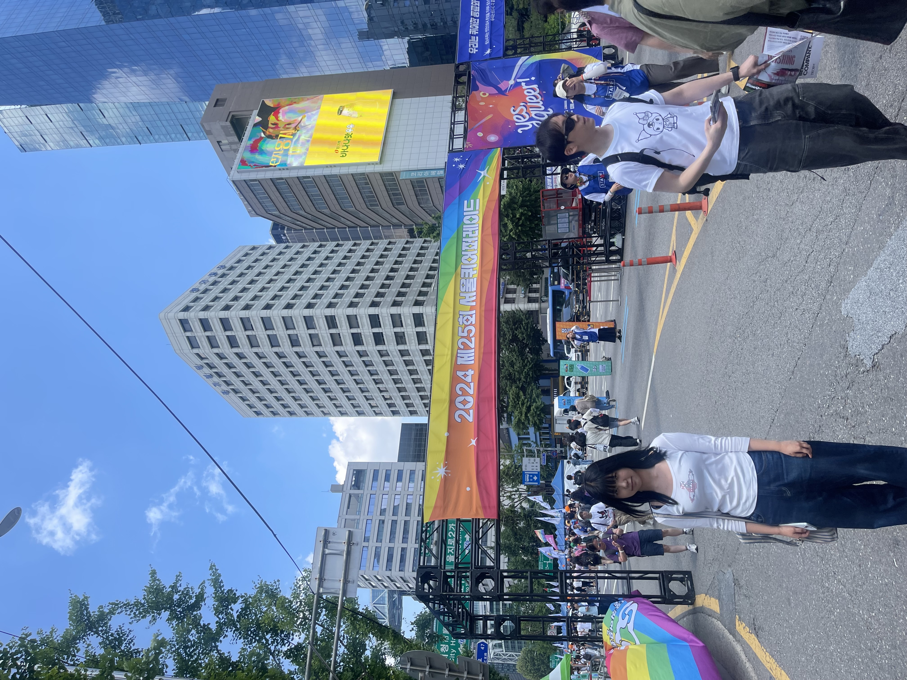
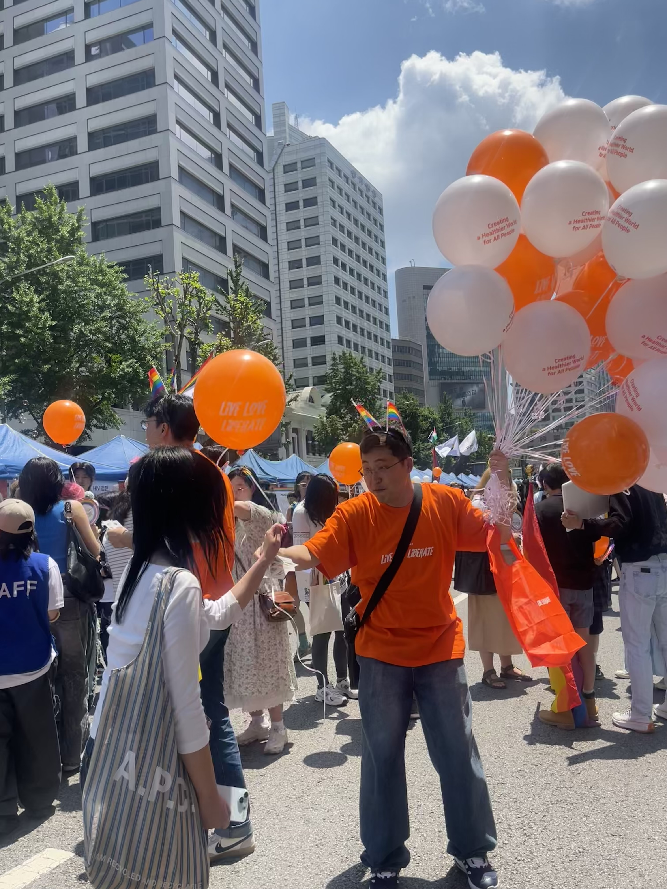

Pride Festival
- Attended the Seoul Queer Festival as a 16-year-old ally to experience LGBTQ+ community and culture firsthand.
- Explored booths and spoke with Dding Ddong youth advocates about affirmation and safe spaces for queer teens.
- Listened to stories from LGBTQ+ servicemembers and veterans; reflected on representation within the military.
- Observed the march atmosphere—music, color, and solidarity—and considered the role of supportive allies.
- Wrote a reflection, “To the Beat of My Own Drum,” about empathy, showing up, and amplifying voices.



Anti-Asian Harassment & Support Resources
Stop AAPI Hate — Report Incidents
Multi-language reporting center and research hub documenting anti-Asian incidents.